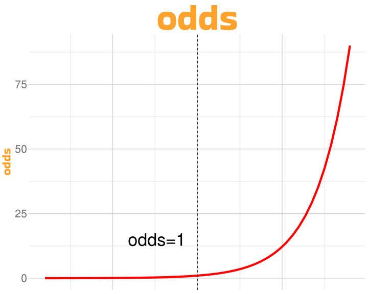
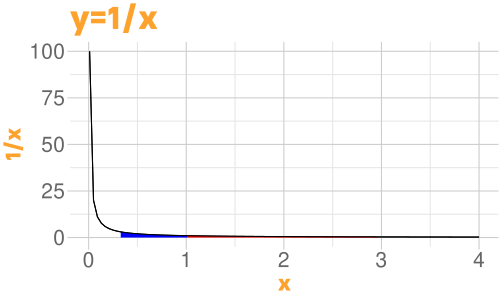
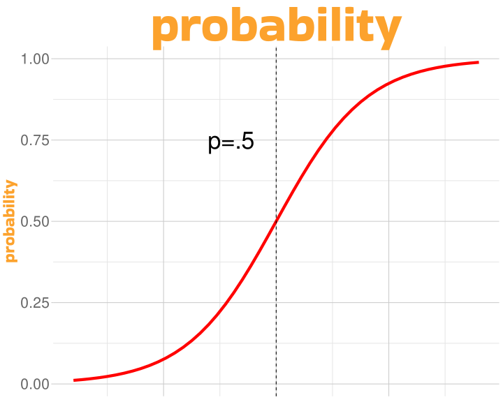
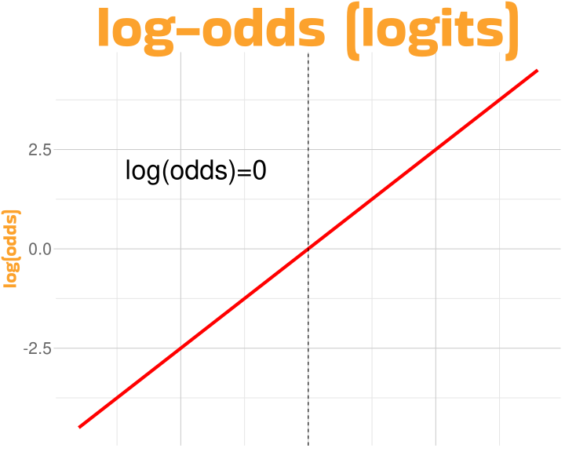
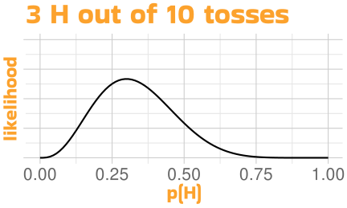
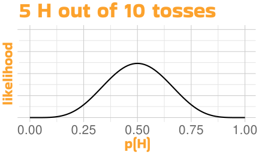
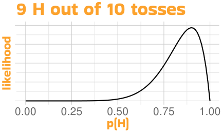

| id | quality | SPLATTED |
|---|---|---|
| The Great Odorjan of Erpod | 84 | 0 |
| Hapetox Bron | 34 | 1 |
| Loorn Molzeks | 92 | 0 |
| Ba'lite Adrflen | 49 | 1 |
| Tedlambo Garilltet | 93 | 0 |
| Goraveola Grellorm | 5 | 1 |
| Colonel Garqun | 55 | 1 |
| Bosgogo Lurcat | 64 | 1 |
| Osajed Voplily | 45 | 0 |
| Subcommander Edorop | 90 | 0 |
The Generalized Linear Model
Univariate Statistics and Methodology using R
A Binary World

Binned Data
singers <- singers |>
mutate(bin = cut_interval(quality,
10))
dat <- singers |>
group_by(bin) |>
summarise(prop = mean(SPLATTED))
dat |>
ggplot(aes(x = bin, y = prop)) +
xlab("quality bin") +
ylab("prop splatted") +
geom_point(size = 3) +
scale_x_discrete(label = 1:10)
Probability and Odds


odds never goes below zero
odds rises to \(\infty\)
 Why \(e\)?
Why \(e\)?
 Why
Why 
- \(\log(l)\) = area under curve between \(1\) and \(l\) (negative if \(l<1\))
log(3)[1] 1.099log(0.3)[1] -1.204Probability and Log-Odds



- \(\log(0)=-\infty\); \(\log(\infty)=+\infty\); \(\log(1)=0\)
- log-odds of \(0\) (odds of \(1\)) are exactly 50:50 (\(p=0.5\))
Probability and Log-Odds


if log-odds are less than zero, the odds go down (multiplied by <1)
if log-odds are greater than zero, the odds go up (multiplied by >1)
high odds = high probability
Likelihood





 Evaluating the Model
Evaluating the Model
Df Deviance Resid. Df Resid. Dev
NULL 999 1377
quality 1 800 998 577- deviance is \(-2\times\) the log-likelihood ratio of the reduced compared to the full model
- higher deviance is good (a bit like \(F\))
mod.n <- glm(SPLATTED ~ 1, family = binomial, data = singers)
logLik(mod.n)'log Lik.' -688.5 (df=1)logLik(mod.b)'log Lik.' -288.6 (df=2)-2 * (logLik(mod.n) -
logLik(mod.b))'log Lik.' 799.8 (df=1)